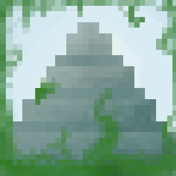

web
images2006: legelső - copy
valahanyadik
masvalahanyadik
2016
2017
 SharedEnderchest
SharedEnderchest
A small minecraft bukkit plugin, that makes the enderchest content the same for each player
sourcedownload
Bukkit Dev
Firefox OS
- AntPaint - market - development
- Trianglr - market
- Gammy - market, concept
- FingerBall - market
- FlyingBall - market
- Infinite Run
{kind=link}
Paca
standardhd
blur
mapgen
repkedős (broken)2d
Flash
egy növény életefaltépő
Java játékok
többnyire sose készültek el
Azteca
Logikai játék, melyben labirintusokon kell átjutni úgy, hogy a falakat kapcsolók segitségével változtathatjuk meg.
win
linux
FOB
Körökre osztott félkész stratégiai multiplayer játék, amit valószinüleg sosem fogok befejezni.
download
2D RTS
Egy 2D-s oldalnézetes platformer-rts hibrid. Egyelőre név nélkül és irtó kezdetleges állapotban. A játék helyszíne Középfölde lesz, ennélfogva törpök, tündék, valamint emberek irányitása lesz a feladatunk, ezekhez egyelőre nicsen grafika(csak zöld négyzet és fehér valami).
A játék futtatásához java7 szükséges. Az egységek irányitása és parancsok kiadása billentyűzettel történik (lásd: readme.txt)
A mapok egyelőre png fájlokban tárolódnak.
A pálya egy akármekkora png fájlból beovlasható, mindössze be kell helyezni a játék /maps mappájába. Minden pixel egy
blockot jelöl. -1.0 ban midnen tipusu egységből egy-egy spawnol a pálya bal felső sarkában, a késöbbi verziókhoz
várható egy mapeditor.
fejlesztés alatt:
- teljes karaktertábla
- több épitési lehetőség
- map editor
- minimális textúra a fajokhoz
tervek:
- egységképzés
- multiplayer
- mobok